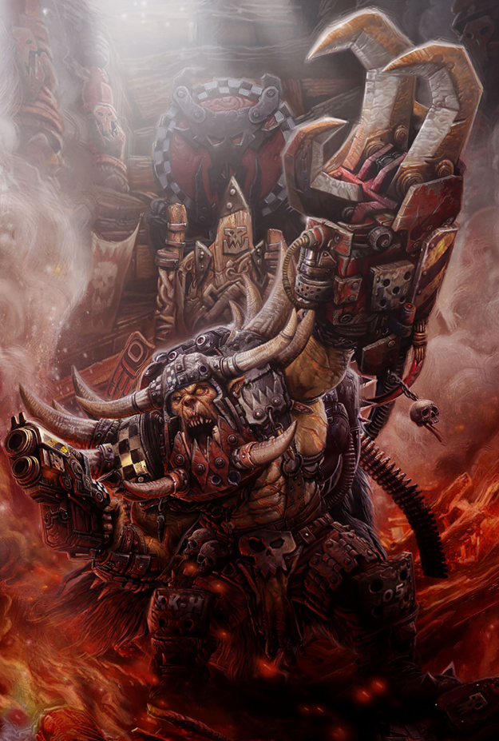

Dossier xenos 701.M41
Les Orks ne sont pas une civilisation. Ils sont une infestation armée. Une masse verte, brutale, bruyante et presque impossible à éradiquer totalement.
Leur origine exacte reste difficile à établir avec certitude. Les archives de l’Ordo Xenos suggèrent qu’ils descendraient d’anciennes espèces guerrières créées pour le conflit. Si cette hypothèse est exacte, alors les Orks ne sont pas devenus violents. Ils ont été conçus pour la guerre.

LES PREMIERS ÂGES
Leur biologie confirme cette horreur. L’Ork est robuste, agressif, résistant et capable de survivre dans des conditions où un humain mourrait rapidement. Mais le plus inquiétant réside dans leur mode de reproduction.
Les Orks se propagent par spores. Là où ils combattent, là où ils meurent, là où leur sang souille la terre, ils laissent derrière eux les germes d’une future invasion. Un champ de bataille nettoyé trop vite devient parfois une pépinière.
Cette vérité rend leur extermination complète presque impossible. Tuer les Orks ne suffit pas. Il faut brûler le sol, purifier les ruines, surveiller les zones contaminées pendant des cycles entiers.
Leur société se forme naturellement autour de la force. Le plus grand frappe le plus petit. Le plus brutal commande. Le plus malin survit assez longtemps pour devenir dangereux.
LA RUPTURE
Ils ne bâtissent pas des empires au sens humain. Ils s’assemblent. Ils se multiplient. Ils se battent entre eux jusqu’à ce qu’un chef suffisamment massif impose sa volonté.
Alors commence la vraie menace. Une horde devient une armée. Une armée devient une marée. Et cette marée prend un nom que les survivants prononcent rarement sans trembler.
Waaagh.
Ce phénomène dépasse la simple mobilisation militaire. Plus les Orks sont nombreux, plus leur énergie collective semble augmenter. Leur violence devient contagieuse. Leurs machines fonctionnent mieux qu’elles ne le devraient. Leur cohésion s’intensifie.
L’HÉRITAGE ACTUEL
L’Ork ne comprend pas la guerre comme l’homme la comprend. Il ne la voit ni comme une tragédie, ni comme un devoir. Pour lui, la guerre est une condition naturelle. Presque une joie.
Là réside leur abomination. Les Orks ne haïssent pas forcément leurs ennemis. Ils veulent simplement se battre. Détruire. Rire au milieu du carnage. Recommencer ailleurs.
Leur origine importe peut-être moins que leur permanence. Depuis des millénaires, ils reviennent. Sur des mondes oubliés. Dans des systèmes déjà purgés. Dans des ruines que l’Imperium croyait silencieuses.
Il faut comprendre ceci. Une invasion ork n’est jamais terminée tant que la planète n’a pas été contrôlée, brûlée et surveillée. Même mort, l’Ork prépare parfois la guerre suivante.
Fin de l’extrait. Toute contamination ork doit être traitée comme menace biologique et militaire prolongée.